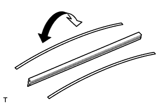
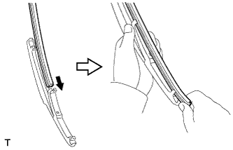
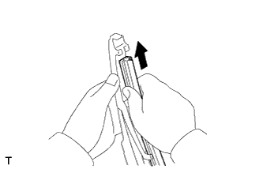

REAR WIPER RUBBER > INSTALLATION |
| 1. INSTALL REAR WIPER RUBBER |
 |
Install the rear wiper rubber to the 2 rear wiper rubber backing plates.
 |
Insert the rear wiper rubber from the claw position of the middle of the rear wiper blade to the end.
 |
After passing the rear wiper rubber through the rear end side claw, allow it to stick out from the rear end stopper and slide it through the front tip side claw.
| 2. INSTALL REAR WIPER BLADE |
Hold the wiper blade at the same angle it was removed at and attach the claw to install it.